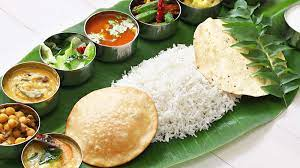

INCREDIBLE INDIAN HERITAGE
Incredible India!
The culture of India refers to the distinct cultures of various religions’ and societies in India. The phrase ‘Unity in Diversity’ is rightly coined by Jawaharlal Nehru to describe our nation that is rich in culture and heritage. India has always been known for its traditions and amiability. The affection in relations and the high spirit of celebrations make our nation stand out distinctively in the world. The vibrant culture of India is the fusion of different religions, cultures, food, festivals, dance, music, art and crafts. Everything from the cultures, traditions, values, beliefs, customs and rituals is unique in our country. The art of Indian culture blends all sorts of hues.
The culture of india is one of the oldest and unique in Idia. There is amazing cultural diversity throghout the country. The South North and Northeast have there own distinct culture and almost every state has carved out its own culture. There is hardly any culture is the world that is as varied and unique as India. India is a best country, having having variety of geographical festival.
CONTENT OVERVIEW(You can jump to the desiredcontent also):
RELIGIOUS CULTURE :
Indian culture is the oldest and famous among the other cultures of the world. Indian literature refers to an amalgamation of distinct cultures of all communities, traditions, customs, and religions in India. The diversity of Indian culture is known worldwide.
Various Indian cultures profoundly influence Indian Philosophy, art, music, and even Literature. The Dharmic religions and Indian cultures throughout Indian history have a significant impact on the customs and traditions. India comprises of diverse lingual tones and communities that are multi-cultural, multi-religious, and multi-ethnic.
Festivals :
There are many festivals that are celebrated throughout the nation while some are only celebrated by different communities and on a seasonal basis with great enthusiasm and joy. Festivals are the best way to provide relaxation and enjoyment in between our busy lives.
Eid or Eid-ul-Fitr is considered one of the greatest festival of the Muslims people. All over the world, the Muslims do celebrate it with great show, pomp, gusto and zeal.

Cuisine :
Indian cooking can very well be known to be vivid, exquisite, and simply delicious. India is a banquet expressed in colors, smells, flavors, and personalities. The hundreds of spices which most Indian cooks use, show exactly why their food can always stand out from others and taste fantastic.
The traditional foods used in India such as curry, Roti, and chutneys are some of the reasons as to why India’s dishes are so extraordinary. The tasty snacks in India complete the list by allowing Indians to grab a quick bite while on the way to an important desti-nation.
Clothing :
Fashion can be termed as the creativity of people which adds to the beauty of a person. It glorifies the personality of an individual especially when a person wears new and trendy clothes and applies well makeup on her/himself, her/his looks and appearance gets changed.
As each of us wants to look handsome, beautiful and pretty so that people could appreciate us after looking at us and become influenced, it is the fashion which helps us in this aspect. Fashion has the capability to change life, the thinking, the temperament of a person. Everybody in spite of any age or gender follow certain trends of fashion which enhances his/her overall personality.